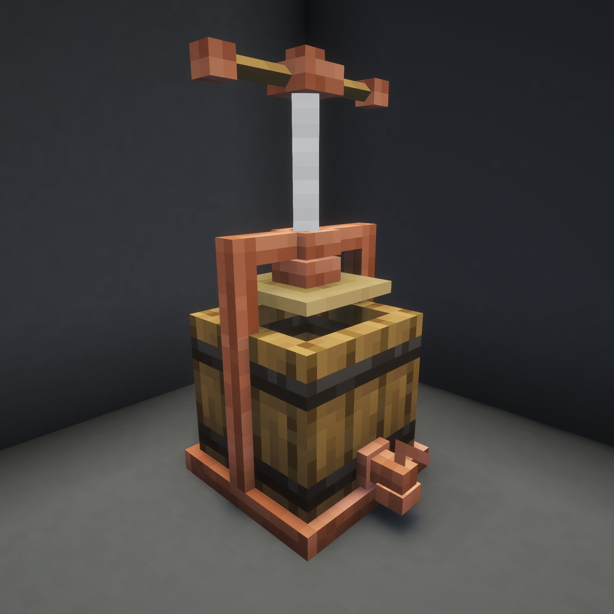
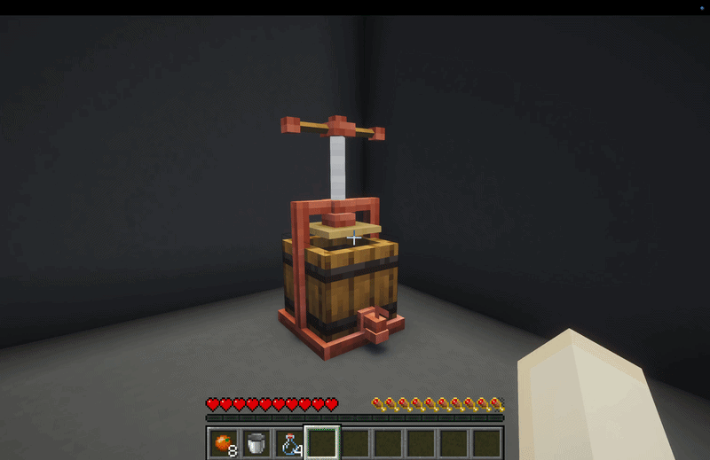

The Juicer squashes things (mainly fruit) into tasty juices.
Insert fruits into the Juicer by right clicking. Takes up to 8 ingredients at a time. Right-click on it a few times to wind the handle down and get up to 2 buckets of juice. There's also a small chance of a by-product (like pulp) of something like dye or Bone Meal.
2.6

